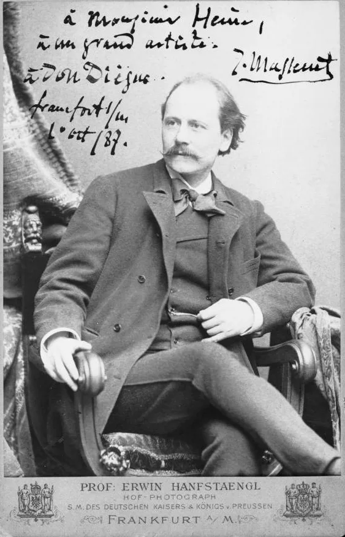

Music pioneer · Romantic · Composer arrangement studio
Jules Massenet
Choose the “Méditation”, then press Play. Follow the singing line as if it were a voice without words: it rises slowly, reaches a passionate climax, and returns to calm. Slow the tempo to hear how each phrase is shaped. Playback uses sampled or synthesized instruments; consult the linked edition for fingering, bowing, pedaling, and expressive detail.
Arranging with care
A source staff is not always the melody: in an orchestral score, find the staff carrying the theme. A two-part piano study pairs your selected voice with a source bass; it is not a concert reduction and wide leaps may need redistribution. Saxophone notation is transposed while playback stays at concert pitch. Violin parts stay at concert pitch and are moved by octaves to sit above the open G string. Guitar tab preserves pitch and rhythm but may need a different octave or fingering. Original ensembles are available only where the source contains those parts. Piano reductions and original classroom studies retain their source identities.
Recordings: Nicholaus P. Brosowsky’s Tonejs-Instruments sample collection, CC BY 3.0; VSCO 2 Community Edition, CC0. Sample credits and processing.
Music pioneer · Romantic · 1842–1912
About Jules Massenet

Jules Massenet (1842–1912) wrote more than twenty operas and taught a generation of French composers. His best-known music is not sung at all: a violin solo played while the curtain is down.
Life and context
Massenet was born on 12 May 1842 near Saint-Étienne, the youngest of a large family, and learned piano from his mother. He entered the Paris Conservatoire at eleven, paid his way by playing percussion in theatre orchestras and piano in cafés, and in 1863 won the Prix de Rome, France’s top prize for young composers.
He became a master of opera. Manon (1884), about a young woman torn between love and luxury, made him famous across Europe, and Werther (1892), after Goethe’s novel, is still performed worldwide. From 1878 to 1896 he was professor of composition at the Conservatoire, where his pupils included Gustave Charpentier, Reynaldo Hahn and George Enescu.
Thaïs premiered at the Paris Opéra in March 1894. It tells of a monk who tries to convert a celebrated courtesan in ancient Egypt. Between two scenes of Act II, while Thaïs reflects on her life, the orchestra plays the “Méditation”: a long solo for violin with harp and strings. It became one of the most-loved encore pieces for violinists.
Massenet worked with great discipline, rising before dawn to compose. His later operas include Le jongleur de Notre-Dame (1902) and Don Quichotte (1910). He died in Paris on 13 August 1912.
Jules Massenet: a timeline
- Born near Saint-Étienne on 12 May.
- Enters the Paris Conservatoire.
- Wins the Prix de Rome.
- Becomes professor of composition at the Conservatoire.
- Manon premieres at the Opéra-Comique.
- Werther premieres in Vienna.
- Thaïs, with its “Méditation”, premieres at the Paris Opéra.
- Don Quichotte premieres in Monte Carlo.
- Dies in Paris on 13 August.
The operatic interlude
An intermezzo or entr’acte is orchestral music played between scenes of an opera. With no words, it lets the audience feel what a character is thinking.
In the “Méditation”, the violin acts like a singer. Its melody moves mostly by step, rises to a climax in the middle, and falls back to the opening theme. Listen for the way the music grows louder and higher as Thaïs’s feelings grow stronger.
Music pioneer · Romantic
Sound experiment: the operatic interlude
Version A plays a melody once. Version B plays it an octave higher and slower, like a singer reaching a climax. What changes in the mood?
This is an original classroom demonstration of a musical idea, not an excerpt or recording of the composer’s work.
Choose a version, then press Play.
Guided listening
Choose a performance of one of these works. Listen once for its overall character, then again for the detail in the prompt.
- “Méditation” from Thaïs: notice where the melody is highest and loudest. What might the character be feeling there?
- Manon, “Adieu, notre petite table”: hear Massenet write a quiet farewell for a singer.
- Werther, Prelude: compare how the orchestra sets the mood before anyone sings.
Practice and reflection
- Find the bar where the melody reaches its highest note. How does the music prepare for it?
- Play the first four bars, then the last four. What is the same, and what is different?
- Choose a moment from a story you know. Describe the music you would write for the time between two scenes.
Check your listening
The opening theme returns at the end after a more passionate middle section. That return (A – B – A) gives the piece its feeling of calm after a storm. A useful answer names a feature you can hear and explains its effect. More than one interpretation is possible.
Use the heart | save pill to keep these notes in this browser, or copy them before leaving.